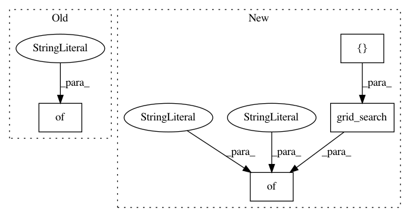

92be5e2d7ece8c25a783e32959361d9dead612ba,examples/variants.py,,get_variant_spec_image,#Any#Any#Any#Any#,441
Before Change
variant_spec["preprocessor_params"].update({
"function_name": "simple_convnet",
"kwargs": {
"image_size": variant_spec["env_params"]["image_size"],
"output_size": 18,
}
})
if task == "image-default":
variant_spec["env_params"].update({
After Change
if "image" in task or "image" in domain.lower():
variant_spec["preprocessor_params"].update({
"function_name": "simple_convnet",
"kwargs": {
"image_size": variant_spec["env_params"]["image_size"],
"output_size": 18,
"num_conv_layers": tune.grid_search([2, 3, 4]), // 4 later
"filters_per_layer": tune.grid_search([16, 32]),
"kernel_size_per_layer": (5, 5),
}
})
if task == "image-default":
variant_spec["env_params"].update({
In pattern: SUPERPATTERN
Frequency: 3
Non-data size: 4
Instances
Project Name: rail-berkeley/softlearning
Commit Name: 92be5e2d7ece8c25a783e32959361d9dead612ba
Time: 2018-08-25
Author: kristian.hartikainen@gmail.com
File Name: examples/variants.py
Class Name:
Method Name: get_variant_spec_image
Project Name: rail-berkeley/softlearning
Commit Name: 8cd59d7bc169f4ac2f3536af364753b1bd1247a3
Time: 2018-07-19
Author: kristian.hartikainen@gmail.com
File Name: examples/variants.py
Class Name:
Method Name:
Project Name: rail-berkeley/softlearning
Commit Name: 0e49e55d906660e5c9168447c77ebc6d917dda5c
Time: 2018-10-22
Author: hartikainen@berkeley.edu
File Name: examples/development/variants.py
Class Name:
Method Name: get_variant_spec